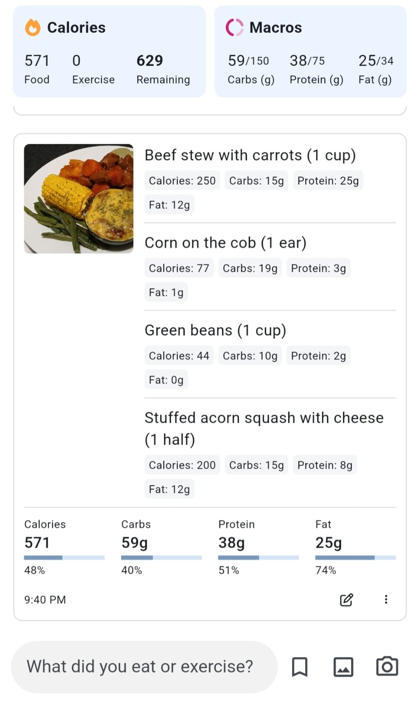

WHY MY BALANCED PLATE
Why My Balanced Plate
The goal is to help customers move from simply "seeing a meal" to understanding "what is in their meal and how it contributes to their overall plate."

What We Offer
1. Balanced Meals
Balanced Plate focuses on creating meals that combine a variety of food components in practical portions. The aim is to make balanced eating easier and more realistic for everyday life, rather than promoting complicated diets or restrictive eating approaches.

2. Better Understanding of What Is in Your Plate
Understand your plate with clear information about the ingredients, portions and estimated nutritional content of each meal. Discover what makes up your meal and gain a better understanding of how the different food components come together on your plate.

Journable Application - AI-Powered Meal and Nutrition Analysis
We use Journable as a supporting tool in our meal-analysis process to help identify food components and estimate portions, calories and macronutrients. This helps us turn our meal information into simple, customer-friendly information.
We use Journable as a supporting tool to help us understand the food components, portions, calories and macronutrients in our meals. We then review the information and present it in a simple, easy-to-understand format, helping you gain clearer insight into what makes up your meal.
Interested in tracking your own meals?
Learn more about Journable and explore the application on its official website.
Visit Journable
3. Practical Meal Preparations
At My Balanced Plate, we focus on meals that are practical, enjoyable and realistic to prepare at home. Our meals are designed to make everyday meal preparation easier by bringing together a variety of ingredients, practical portions and simple preparation ideas.